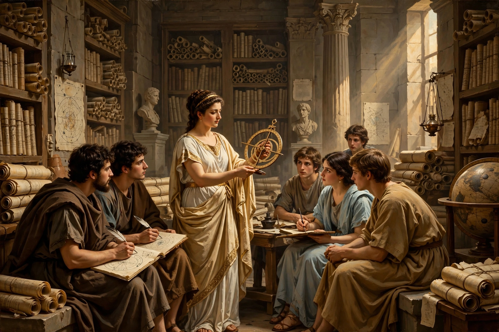

From Wikipedia, the free encyclopedia
| Hypatia | |
|---|---|
| Born | c. 350–370 AD, Alexandria, Egypt |
| Died | March 415 AD, Alexandria |
| Fields | Mathematics, astronomy, Neoplatonist philosophy |
| Father | Theon of Alexandria |

Hypatia (born c. 350–370; died 415 AD) was a Hellenistic Neoplatonist philosopher, astronomer and mathematician who lived in Alexandria, Egypt, then part of the Eastern Roman Empire. Head of the city's Platonist school, she taught mathematics and philosophy to students from across the Mediterranean, edited and commented on works of Apollonius, Diophantus and Ptolemy, and advised the imperial prefect Orestes. In 415, amid a power struggle between Orestes and Bishop Cyril, a Christian mob seized and murdered her — an atrocity that made her an enduring symbol of learning martyred by fanaticism.
Accounts come from Socrates of Constantinople's church history (sympathetic), Damascius (pagan, bitter), and letters of her pupil Synesius. Details popularly attached to her — inventing the hydrometer, the sack of the Great Library at her death — are later accretions. She remains the most famous woman philosopher of antiquity, reclaimed by feminists, scientists and novelists (Kingsley's Hypatia, the film Agora).